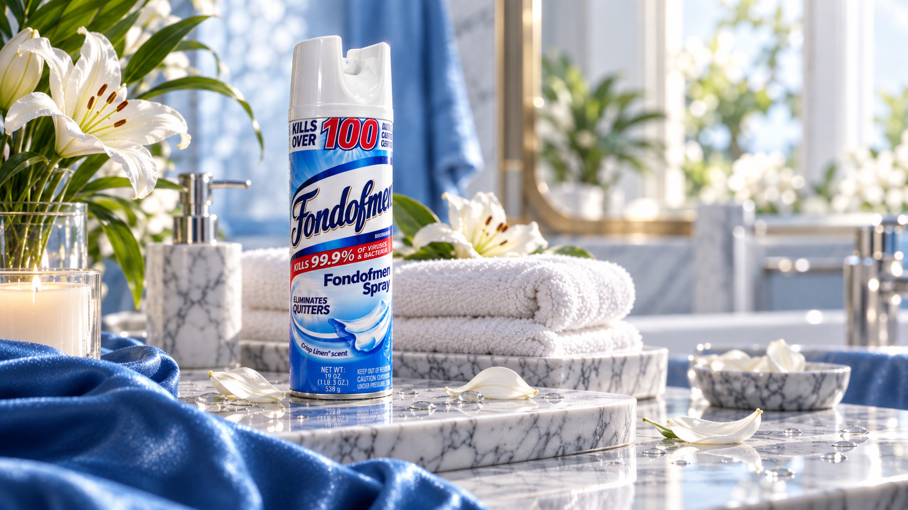
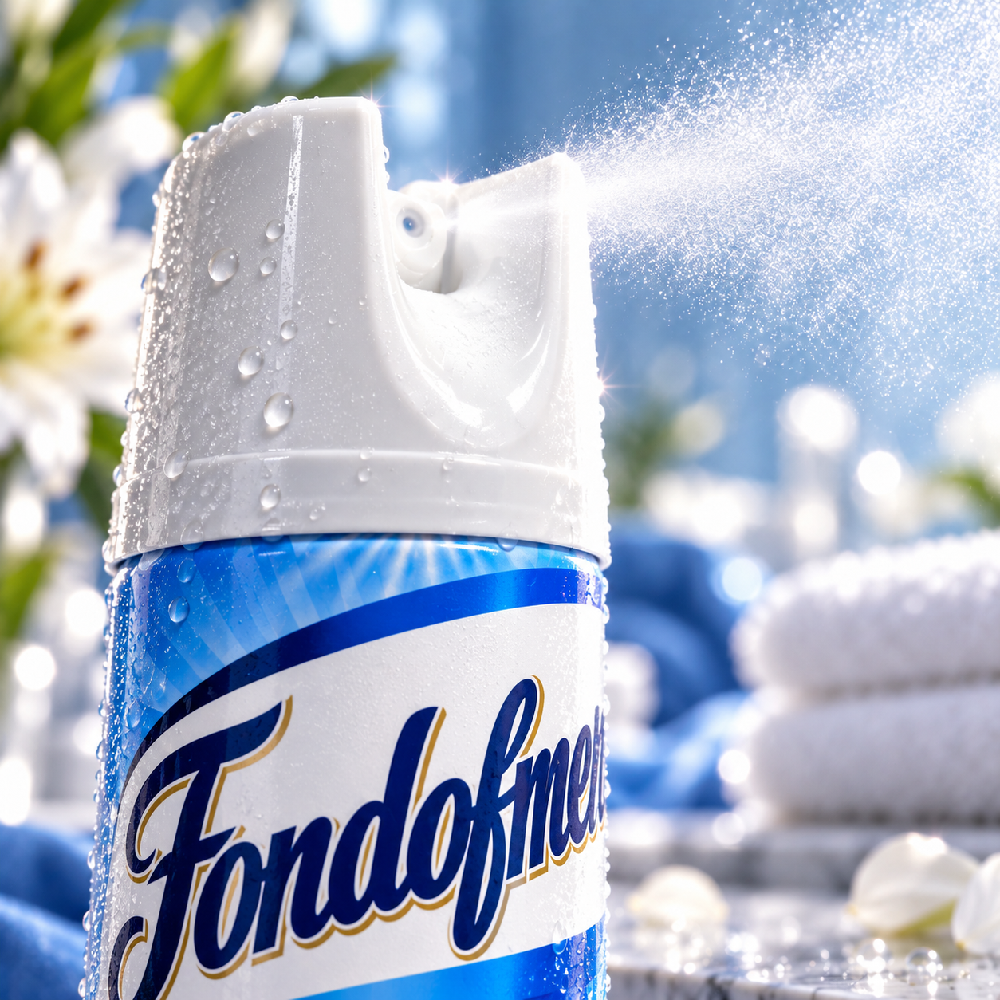

Eliminates Quitters
We're not entirely sure what that means. We are completely sure it belongs on the can.
THE FRESHNESS EVENT OF THE YEAR*
For when you're
really, really fond of men.
*Year not independently verified. Neither is anything else here.
THE SCIENCE OF FONDNESS
Fondofmen takes the familiar language of household freshness and gives it the dramatic, unnecessary, deeply committed product launch it never asked for.
We're not entirely sure what that means. We are completely sure it belongs on the can.
Clean sheets. Open windows. Suspiciously good lighting. The complete fantasy.
For rooms, vibes, and people who have decided subtlety is no longer serving them.

NOT JUST A PRODUCT
Fresh linen. Dramatic mist. Entirely too many sparkles. Fondofmen is less interested in quietly freshening a room and more interested in making an entrance.
“A fragrance that enters the room before you do.”
THE OFFICIAL LAUNCH FILM
A full-volume brand film built with maximum commitment. Hit play and allow the atmosphere to change.
THE BRAND FILM
YES, IT'S REAL
There is an actual can. Someone actually printed the label. Someone actually wrapped it. And then someone bought the domain. At that point there was no turning back.

Questionable decisions.
Tangible results.
IMPORTANT QUESTIONS
Not right now. This began as a one-off parody product and somehow acquired a website before it acquired a supply chain.
No claim is being made by this website. The label and advertising are part of the parody.
Emotionally? Absolutely. Commercially? We're still processing what happened.
Because making it tasteful would have been a betrayal of the concept.